HOME BLOG EBOOKS ABOUT CONTACT SHOP
Now we'll discuss some short comings of the two algorithms we discussed so far.
If you are presented with data as shown below, how would you approach the problem?
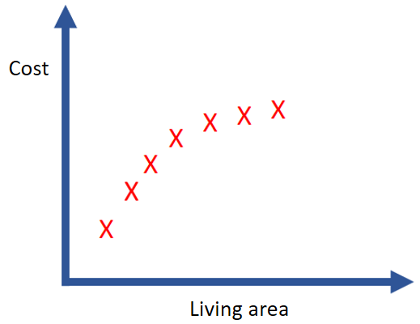
You could use linear regression and try to fit a straight line to the data. But it’s pretty evident from observation itself that the data doesn’t follow a linear pattern, so by trying to fit a straight line we are not representing the data appropriately. In other words, we are adamant on making data fit a pattern which it doesn’t have. This is called Underfitting.
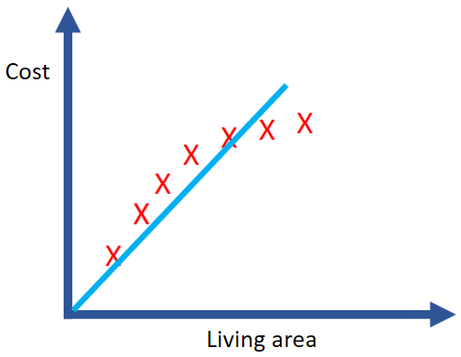
Now if decide to fix the issue by adding a bunch of polynomial terms (like x2, x3, x4), we will probably get a curve as shown below.
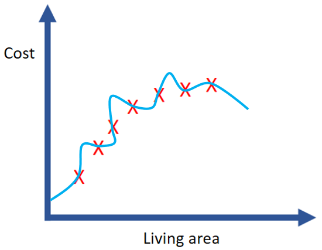
Yes, we do get a curve that fits all the data points perfectly by adding those polynomial terms, but this isn’t the curve we were looking for, this is kind of unnatural. This problem arises because, by adding too many polynomial terms we have given too much importance to a individual data points (which also contains noise), therefore the curve tries too hard to fit the data points and fails to come up with a general pattern. This is called Overfitting.
Ideally, we would want a smooth curve like this to fit our data.
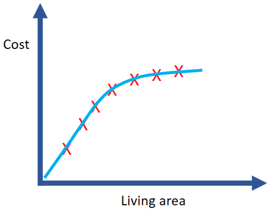
Underfitting & Overfitting are a concern in case of logistic regression as well.
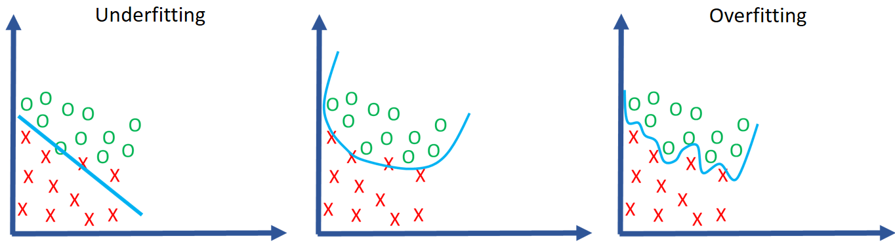
As you go more into Machine Learning, you’ll realize that Underfitting isn’t much of a problem and it’s Overfitting that is the major culprit most of the time.
There are 2 popular methods to tackle the problem of Overfitting:
We will stick to Regularization for now and discuss Cross-validation later on. The basic idea behind cross-validation is to split up training data into parts and use one part for training the model and the rest to test the effectiveness of the model.
Consider a function, f(x) = 2 + 4x +7x2 + 0.0001 x3, this is a cubic polynomial but because the coefficient of x3 is so small, it is practically a quadratic equation. This is exactly what we hope to do with regularization. We want to restrict the parameters to small values such that the impact of each feature is kept to a minimum and the hypothesis function is much simpler and smoother.
The two commonly used Regularization techniques are ridge & lasso regression. In both cases, an extra term is added to the cost function to reduce the values of the parameters.
In ridge regression, the extra penalty term used is:
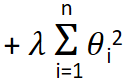
Here λ is called the Regularization parameter. What this extra term does is it hugely increases the coefficients for each parameter θ, hence when we try to minimize the cost function, the parameters θ will become small to compensate for the extra coefficients added. The θ0 term is left out of the regularization, since there is no feature attached to this parameter.
In lasso regression, the extra penalty term used is:
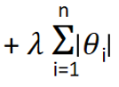
The difference between the two mentioned regularization techniques is that using ridge regression you can reduce the parameters corresponding to the useless features to a minimum (close to zero). Whereas in lasso regression, you can totally eliminate the parameters corresponding to useless features i.e you can minimize it all the way to zero. We are not going into the reason why these techniques behave in this manner here, but keep these facts in mind.
So which technique is better? Generally, when the number of features are less, it’s not wise to completely eliminate any features, so in such a case Ridge regression is the preferred technique. On the contrary if the number of features are very high, we would want to eliminate a few useless features and Lasso regression is the best option for that.
The next important question is, how to chose the value of λ? Typically a large value is chosen as λ, but the problem is that if its value is too high, it may lead to underfitting, which we want to avoid as well. So practically the value of λ is chosen by trial and error using cross validation method.
Using the Ridge technique, the Linear regression cost function can be modified as:
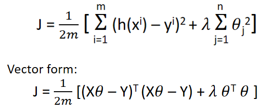
So the correspondingly the gradient descent parameter update rule can be modified as:
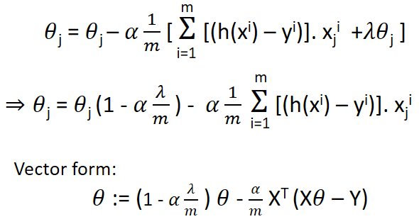
Similarly, the normal equation formula gets modified as:
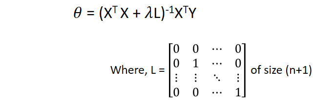
Using the Ridge technique, the Logistic regression cost function can be modified as:
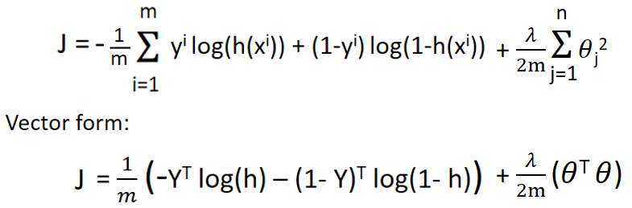
The update rule is same as in the linear regression.